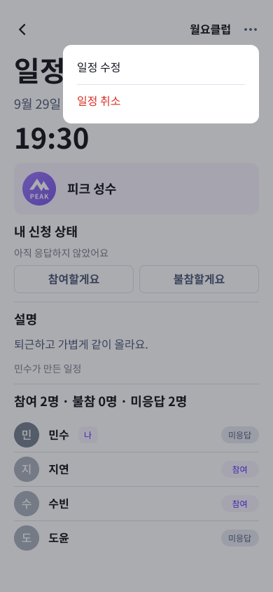
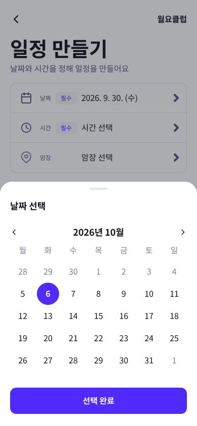
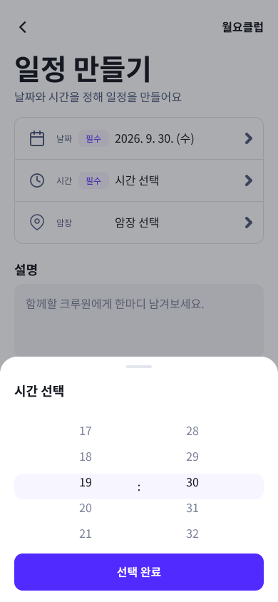

공통 메뉴·날짜·시간 선택
2026-10-05 · 실제 Figma 사진 · 사용자 승인·구성 확정. 정식 화면 번호는 늘리지 않았습니다.
Figma 전체 배치 열기
F01 · 더보기 메뉴
기존 일정 상세 위의 대표 시안입니다. 개인 기록·크루 방문 메뉴 차이는 Figma 옆 부품으로 표시했습니다.

F02 · 날짜 선택
선택 완료 전은 임시값입니다. 기록·일정의 날짜 제한을 적용하는 공통 선택창 시안입니다.

F02 · 시간 선택
24시간·1분 단위로 세로 선택합니다. 닫으면 기존 입력을 유지하는 검토 시안입니다.

새 시안·메뉴 부품·옆 명세 인스턴스308개에서 원본 누락0개. 운동 정책: 종료 자동 저장, 종료하지 않고 앱 강제 종료 시 취소, 운동 중 기록 화면에만 표시줄. 운동 중 암장 변경·새 운동 중복 시작은 불가합니다. 시작 A·B 선택은 추후 결정합니다. 달력·목록 외 기록 화면의 표시줄 적용·배치 확인은 남은 화면 작업 목록을 따릅니다.